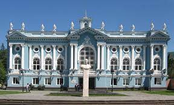

Senaki:las vegas of samegrelo
here is what you can do and see in senaki:
see senaki theatre

see shartava museum
nigga visit dzvsenaki(best senaki)
800 years old oak in dzvsenaki
see 18th century church
see shalva qavtaradze